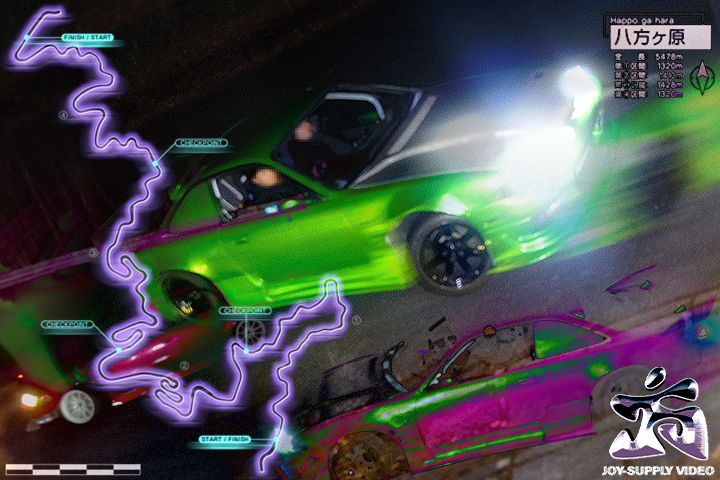

Video.
Ongoing.
My deep interest in drifting and cameras has led me to capturing some incredible moments all over the world. All of my video work has been filmed on tape based camcorders, with later work running the tapeless joy-cam system.
See more: https://www.youtube.com/@joysupply https://www.instagram.com/joysupply.jp/
